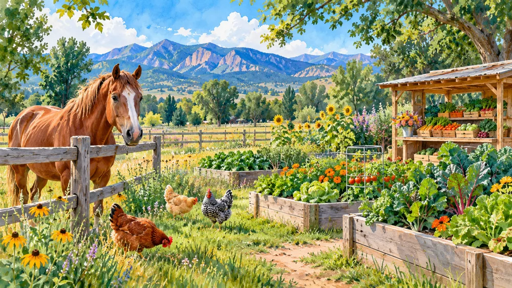
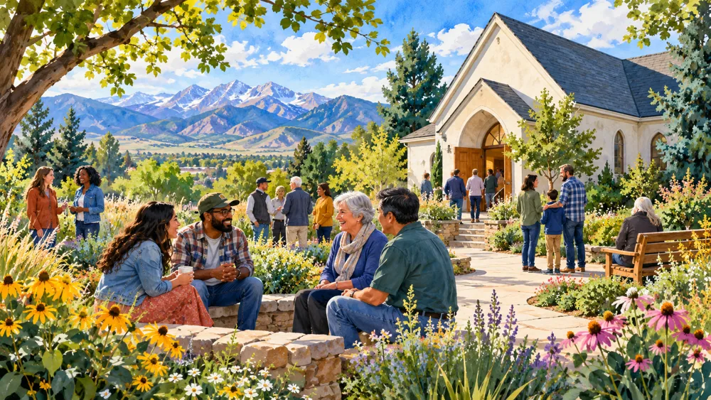

Ollin Farms
A family-run regenerative farm growing vegetables and building community around food, healthy soil and education. The farm offers a seasonal farm stand, CSA shares, youth education, farm tours and farm-to-table dinners.

Discover the organizations and gathering places that help Longmont neighbors connect and support one another. Find volunteer opportunities, community programs, senior resources and practical assistance—and learn where your time, participation or support can make a difference.

Farmers markets, farm stands and locally grown food.
Local farms you can visit, shop or experience.

Food banks, free groceries and community assistance.

Local congregations and spiritual communities.

Local meditation, mindfulness and yoga communities.
Give your time, meet neighbors or find local support.
These small, family-run farms give you a chance to buy closer to the source, meet growers and experience Longmont's agricultural roots.
A family-run regenerative farm growing vegetables and building community around food, healthy soil and education. The farm offers a seasonal farm stand, CSA shares, youth education, farm tours and farm-to-table dinners.
A USDA Certified Organic Longmont farm growing vegetables, herbs, flowers and starter plants using biodynamic practices. The seasonal roadside stand makes it easy to shop directly from the farm.

A small historic orchard specializing in heirloom apples and family-oriented farm experiences. Visitors can shop the farm stand, see the farm animals, bring a picnic and enjoy seasonal events.

A small family-run farm where visitors can see farm animals, learn about bees, feed animals, explore tractors and enjoy seasonal flowers and pumpkins.

A family-run organic farm with a seasonal farm stand, plants, produce and fall activities. It is especially popular during pumpkin season but also operates a farm market during the growing season.
If you need food, know someone who does, or want to donate or volunteer, Longmont has several community-based organizations ready to help.
A Longmont nonprofit resource center providing groceries, meals and other support to individuals and families working toward stability and self-sufficiency.

A local nonprofit reducing food waste while getting fresh food directly to people who can use it. Programs include no-cost groceries, free produce distributions, community fridges and Fresh Food Connect.
A volunteer-supported Longmont food bank providing food boxes to local individuals and families experiencing difficult times.
A community food distribution hosted by Westview Presbyterian Church. Shoppers receive prepacked groceries including pantry foods and fresh items when available. No qualification or ID is required.
A volunteer-run nonprofit food pantry operating from White Fields Community Church. The pantry provides food assistance and welcomes community volunteers to help with distribution and operations.
A local nonprofit delivering hot meals and a daily wellness check to older adults and people with disabilities in Longmont and Niwot.
The City of Longmont maintains a current community-resource directory with additional food pantries, transportation assistance, mental-health resources and other local services.
Longmont has many congregations and spiritual communities. These are a few local places that combine worship or spiritual practice with community connection, service and outreach.
A small Jodo Shinshu Buddhist community welcoming newcomers, longtime practitioners and anyone interested in learning more about Buddhism.
A longstanding United Methodist congregation with worship, study groups, community events, service projects and meditation programming.
A Longmont Presbyterian congregation with worship, study groups, fellowship activities and extensive community service through The ROUND PANTRY.
A longstanding Longmont Catholic parish with English and Spanish services, religious education, community ministries and its own community food bank.
A local Christian congregation offering Sunday worship, children's programming, student ministry and opportunities to connect through community groups and service.
For people looking for community outside a traditional religious setting, Longmont also has locally rooted spaces for meditation, yoga, breathwork and mindful movement.
A community-focused downtown yoga studio offering a variety of practices including yoga, meditation, restorative classes and specialty programming.
A locally owned Longmont studio with heated and non-heated yoga, meditation, yoga nidra, sound experiences and community events.
A Longmont mindful-movement studio combining yoga, strength, barre, breathwork and meditation. The studio emphasizes connection, growth and shared experience.
One of the easiest ways to feel connected to a community is to participate in it. These Longmont organizations and public resources offer ways to volunteer, learn, meet people or receive support.
A community-centered recovery organization creating a welcoming space for people rebuilding their lives. Volunteer opportunities include cooking, hospitality, teaching classes and helping with support activities.
A local gathering place for adults 55+ with more than 200 programs each quarter, including classes, fitness, technology help, social activities, support services and volunteer opportunities.
More than books. The Longmont Library offers free programs for children, teens and adults, classes, digital resources, community events, volunteer opportunities and spaces to learn and connect.
Longmont residents can volunteer with parks, trails, the library, museum, senior services, youth programs, community events, public safety and sustainability programs.
A nonprofit helping older adults remain independent and connected through volunteer-powered services such as grocery help, minor home repairs, yard work, snow shoveling and medical rides.
Sometimes connection starts with something simple: buying vegetables from a farmer, volunteering for an afternoon, joining a class or introducing yourself to someone new.
Shopping from local farms and growers keeps more money in the local food system and creates connections between residents and the people who grow their food.
Food pantries, senior programs, libraries, parks and local nonprofits all depend on people willing to give a little time.
Markets, classes, community events, faith communities and local groups are easier places to meet people than waiting for community to find you.
Some of the best local resources are the ones neighbors tell each other about.
Looking for a local resource, organization, group or recommendation? Ask us.
Send an original local photograph, community story or something positive you think Longmont should see.
Loving Longmont will keep growing as neighbors share local places, resources, organizations, photos, stories and ideas. If something helps people connect with Longmont, we want to know about it.
Contact Loving Longmont →